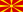
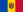
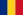

2015 European Short Course Swimming Championships
| 2015 European Short Course Swimming Championships | |
|---|---|
| Host city | Netanya, Israel |
| Date(s) | 2â6 December |
| Venue(s) | Wingate Institute |
| Nations participating | 48 |
| Athletes participating | 500 |
|
â 2013 Herning
2017 Copenhagen â
|
|
The 2015 European Short Course Swimming Championships took place in Netanya, Israel, from 2â6 December 2015.[1] They were originally scheduled to be held in January 2015, but the LEN moved the event to December.[2] The venue of the event is going to be the brand new swimming complex of the Wingate Institute. This complex features an Olympic-size pool with 10 lanes and 3 meter depth, backed by the latest built-in filtration systems, an 8-lane 50 m pool and a 6-lane 25 m pool.
The swimmer of the meet honors went to Katinka Hosszú of Hungary and Gregorio Paltrinieri of Italy.[3] Hosszú won six gold medals and one silver, breaking two world records and six championship records, while Paltrinieri won one gold medal in a world record time.
Contents
[hide]Records broken[edit]
| Event | Date | Round | Name | Nationality | Time | Day | References |
|---|---|---|---|---|---|---|---|
| 400 m individual medley (record progression) |
2 December | Heats | Katinka Hosszú | 4:19.46 | 1 | [4] | |
| 100 m individual medley (record progression) |
4 December | Final | Katinka Hosszú | 56.67 | 3 | [5] | |
| 1500 m freestyle (record progression) |
4 December | Final | Gregorio Paltrinieri | Italy | 14:08.06 | 3 | [6] |
| Event | Date | Round | Name | Nationality | Time | Day | References |
|---|---|---|---|---|---|---|---|
| 200 m individual medley | 4 December | Final | László Cseh | 1:51.36 | 3 | [7] | |
| 200 m butterfly | 6 December | Final | László Cseh | 1:49.00 | 5 | [3] |
| Event | Date | Round | Name | Nationality | Time | Day | References |
|---|---|---|---|---|---|---|---|
| 200 m backstroke | 2 December | Final | RadosÅaw KawÄcki | 1:48.33 | 1 | ||
| 100 m individual medley | 3 December | Heats | Katinka Hosszú | 57.52 | 2 | ||
| 200 m breaststroke | 3 December | Final | Marco Koch | 2:00.53 | 2 | ||
| 100 m backstroke | 3 December | Final | Katinka Hosszú | 55.42 | 2 | ||
| 100 m individual medley | 3 December | Semifinal 2 | Katinka Hosszú | 57.49 | 2 | ||
| 50 m butterfly | 3 December | Final | Sarah Sjöström | 24.58 | 2 | ||
| 4Ã50 m mixed medley | 3 December | Final | Simone Sabbioni Fabio Scozzoli Silvia Di Pietro Erika Ferraioli |
Italy | 1:38.33 | 2 | |
| 200 m backstroke | 4 December | Heats | Katinka Hosszú | 1:59.95 | 3 | ||
| 200 m backstroke | 4 December | Final | Katinka Hosszú | 1:59.84 | 3 | ||
| 200 m individual medley | 5 December | Final | Katinka Hosszú | 2:02.53 | 4 | ||
| 4Ã50 m mixed freestyle | 5 December | Final | Federico Bocchia Marco Orsi Silvia Di Pietro Erika Ferraioli |
Italy | 1:29.26 | 4 | |
| 100 m butterfly | 6 December | Final | Sarah Sjöström | 55.03 | 5 | ||
| 4Ã50 m medley | 6 December | Final | Simone Sabbioni Fabio Scozzoli Matteo Rivolta Marco Orsi |
Italy | 1:31.71 | 5 |
Results[edit]
Men's events[edit]
Legend: WR - World record; ER - European record; CR - Championship record
Women's events[edit]
Legend: WR - World record; ER - European record; CR - Championship record
Mixed events[edit]
| Event | Gold | Silver | Bronze | |||
|---|---|---|---|---|---|---|
| 4Ã50 m mixed freestyle | Italy Federico Bocchia (21.58) Marco Orsi (20.46) Silvia Di Pietro (23.63) Erika Ferraioli (23.59) |
1:29.26 CR |
Evgeny Sedov (21.14) Nikita Konovalov (20.85) Nataliya Lovtsova (23.63) Rozaliya Nasretdinova (23.97) |
1:29.59 | Jesse Puts (21.74) Ben Schwietert (21.78) Inge Dekker (23.78) Ranomi Kromowidjojo (22.73) |
1:30.03 |
| 4Ã50 m mixed medley | Italy Simone Sabbioni (23.50) Fabio Scozzoli (25.99) Silvia Di Pietro (25.24) Erika Ferraioli (23.60) |
1:38.33 CR |
Andrei Shabasov (23.52) Andrei Nikolaev (25.69) Alina Kashinskaya (25.47) Rozaliya Nasretdinova (23.68) |
1:38.36 | Belarus Pavel Sankovich (23.50) Ilya Shymanovich (26.64) Svetlana Khokhlova (25.33) Aleksandra Gerasimenya (23.56) |
1:39.03 |
Legend: WR - World record; ER - European record; CR - Championship record
Medal table[edit]
Host nation
| Rank | Nation | Gold | Silver | Bronze | Total |
|---|---|---|---|---|---|
| 1 | 11 | 3 | 1 | 15 | |
| 2 | Italy | 7 | 5 | 5 | 17 |
| 3 | 4 | 2 | 1 | 7 | |
| 4 | 3 | 7 | 7 | 17 | |
| 5 | 3 | 2 | 2 | 7 | |
| 5 | 3 | 2 | 2 | 7 | |
| 7 | 2 | 7 | 2 | 11 | |
| 8 | 2 | 3 | 4 | 9 | |
| 9 | 2 | 0 | 0 | 2 | |
| 10 | 1 | 3 | 1 | 5 | |
| 11 | Slovenia | 1 | 0 | 0 | 1 |
| 11 | 1 | 0 | 0 | 1 | |
| 13 | 0 | 3 | 1 | 4 | |
| 14 | Israel | 0 | 2 | 1 | 3 |
| 15 | Belarus | 0 | 1 | 3 | 4 |
| 16 | 0 | 1 | 1 | 2 | |
| 17 | Iceland | 0 | 0 | 2 | 2 |
| 17 | 0 | 0 | 2 | 2 | |
| 19 | 0 | 0 | 1 | 1 | |
| 19 | Greece | 0 | 0 | 1 | 1 |
| 19 | 0 | 0 | 1 | 1 | |
| 19 | Lithuania | 0 | 0 | 1 | 1 |
| 19 | 0 | 0 | 1 | 1 | |
| 19 | 0 | 0 | 1 | 1 | |
| Total | 40 | 41 | 41 | 122[8] | |
Participating nations[edit]
500 swimmers from 48 nations will take place at the competition. The only LEN members that will not participate are Gibraltar, Monaco, Montenegro and San Marino.[9][10]
- Albania (2)
- Andorra (2)
 Armenia (2)
Armenia (2) Austria (19)
Austria (19) Azerbaijan (3)
Azerbaijan (3)- Belarus (13)
.svg.png) Belgium (11)
Belgium (11)- Bosnia and Herzegovina (3)
 Bulgaria (2)
Bulgaria (2) Croatia (9)
Croatia (9) Cyprus (2)
Cyprus (2)- Czech Republic (27)
 Denmark (8)
Denmark (8) Estonia (16)
Estonia (16) Faroe Islands (3)
Faroe Islands (3) Finland (22)
Finland (22) France (13)
France (13) Georgia (2)
Georgia (2) Germany (27)
Germany (27) Great Britain (12)
Great Britain (12)- Greece (3)
 Hungary (27)
Hungary (27)- Iceland (3)
 Ireland (2)
Ireland (2)- Israel (46) (Host country)
- Italy (36)
- Kosovo (2)
 Latvia (3)
Latvia (3)- Liechtenstein (1)
- Lithuania (7)
 Luxembourg (6)
Luxembourg (6)-  Macedonia (1)
- Malta (2)
-  Moldova (3)
 Netherlands (13)
Netherlands (13) Norway (8)
Norway (8) Poland (8)
Poland (8) Portugal (14)
Portugal (14)-  Romania (5)
 Russia (38)
Russia (38) Serbia (7)
Serbia (7)- Slovakia (12)
- Slovenia (10)
 Spain (4)
Spain (4) Sweden (7)
Sweden (7) Switzerland (11)
Switzerland (11) Turkey (18)
Turkey (18) Ukraine (5)
Ukraine (5)
References[edit]
- Jump up ^ Netanya (ISR) to host LEN's top s\c showcase in January 2015
- Jump up ^ LEN moves 2015 Short Course Europeans to December
- ^ Jump up to: a b Lord, Craig (December 6, 2015). "Laszlo Cseh Goes Longer On Longevity With s/c 1:49 Euro Mark & WR-Rattler 200 âFly". Swimvortex. Retrieved December 6, 2015.
- Jump up ^ Every Moment An Olympic Height: Katinka Hosszu Cracks 400m IM
- Jump up ^ Keith, Braden (December 4, 2015). "Katinka Hosszu Breaks World Record in 100 IM". Swimswam. Retrieved December 4, 2015.
- Jump up ^ Keith, Braden (December 4, 2015). "Gregorio Paltrinieri Breaks Oldest World Record on the Books in 1500". Swimswam. Retrieved December 4, 2015.
- Jump up ^ Grace, Jeff (December 4, 2015). "Cseh Breaks Roganâs 2009 European Record in the Menâs 200 IM". Swimswam. Retrieved December 4, 2015.
- Jump up ^ LEN Official website
- Jump up ^ Official website
- Jump up ^ Entries Netanya 2015 - Statistics
External links[edit]
|
||